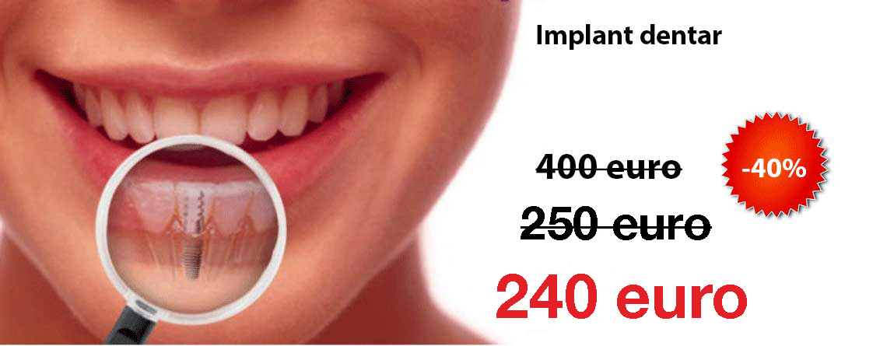

<section id="post">
        <div class="container">
            <div class="row">
                <div class="col-lg-12 text-center">
                    <h2>Implant dentar Alpha Bio <br/> Extra Reducere: preț 240 euro</h2>
                    <hr class="star-primary">
                </div>
            </div>
            <div class="row">
                
               
                <div class="col-lg-8 col-lg-offset-2 text-center">
                
                    
                                
                </div>
                
                <div class="col-lg-8 col-lg-offset-2">
                <p class="small">     
                    Prețul din extra-ofertă este valabil doar in luna {{site.offer.extramonth}} impreună cu codul de mai jos.
                </p>
                <p>
                     Cabinetul nostru, <a href="{{site.contact.office.url}}" target="_blank">{{ site.newname }}</a> (ex IQDent), a fost printre primele din București care a redus masiv prețurile la implanturi fără a face rabat la calitate. Oferta de implant dentar Alpha-Bio la 250 euro este valabilă din 2013 și în acest timp sute de pacienți au beneficiat de ea. Noi am preferat să nu schimbăm brandul din ofertă fiindcă este un brand de încredere chiar dacă între timp prețul de producător a crescut. În plus, cu extra reducerea de 10 euro încercam să preluam noi întreaga devalorizare a leului din ultimul timp. 
                </p>
                <p>                    
                      <strong>Atentie</strong>, între timp au apărut multe alte cabinete și oferte care oferă prețuri similare sau chiar mai mici. E bine să vă interesați ce tipuri de implanturi sunt în ofertă, și să vă asigurați că primiți un implant de calitate. Implantul Alpha Bio este produs de <a href="https://www.nobelbiocare.com/" target="_blank">Nobel Biocare</a>, unul dintre cei mai mari producători de implanturi din lume (implanturile Nobel ajung la prețuri de peste 1000 de euro). Unii medici preferă să folosească implanturi mai ieftine și să le spună pacienților că folosesc implanturi "compatibile" Alpha-Bio. Asigurați-va că primiți implanturi originale și insistați să primiți seria și numărul implantului. Dacă plătiți un implant Alpha-Bio nu acceptați să vi se pună ceva mai ieftin. 
                </p>
                <p>
                     Pentru o perioadă limitată ({{site.offer.extramonth}}) puteți beneficia de prețul de 240 euro pentru implanturi Alpha-Bio. Trebuie să prezentați codul <strong>ALPHA240</strong> în cabinet pentru a primi extra-reducerea de 10 euro. Dacă nu vă puteți programa în timpul valabilității extra-reducerii lăsați-ne un mesaj mai jos pentru a vă rezerva acest preț. 
                </p>     
                </div>
                
                <div class="col-lg-12 text-center">
                   <div class="fb-comments" data-href="{{site.url}}{{page.url}}" data-numposts="2" data-colorscheme="light"></div>   
                </div>
                
            </div>    
        </div>
</section>
